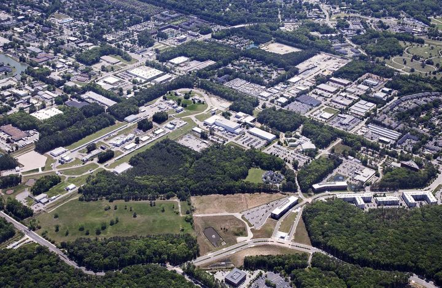
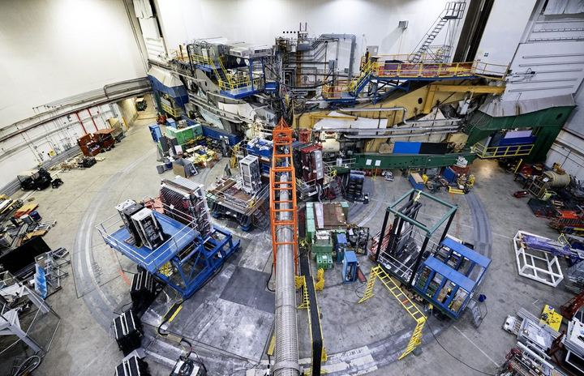
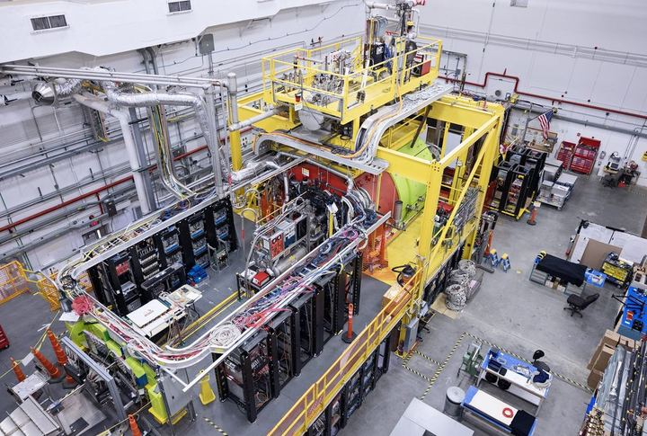
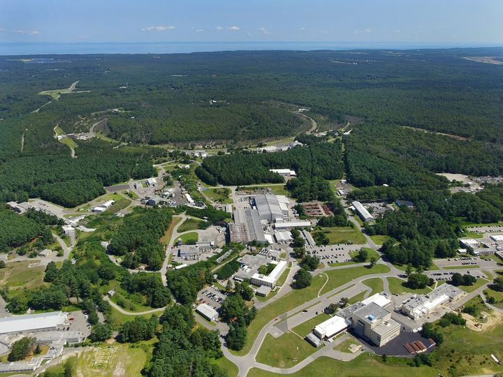
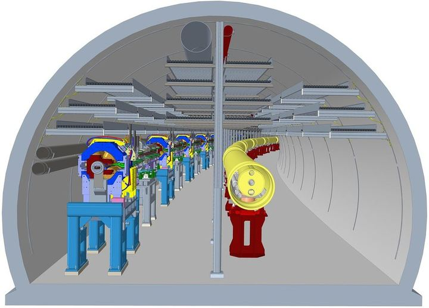
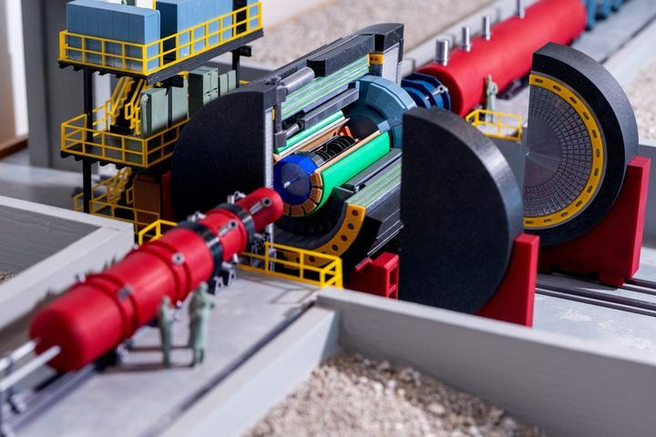

Korover Lab - Experimental Nuclear Physics @ Tel Aviv University
Welcome to the Korover Lab website. Here you can get to know the group, read about our research, and find our latest publications. We study how quarks and gluons build protons and neutrons, and what happens when two nucleons overlap inside a nucleus: at Jefferson Lab today, and at the Electron-Ion Collider next. Our projects run from detector design and simulation to data analysis and modelling.
Fully funded MSc and PhD positions are available: see Join Us.
Group News
New paper on short-range correlated pairs from nucleon density profiles as a new probe of the nuclear equation of state available on the arXiv.
New paper on short-range correlated pair formation and nuclear shell structure, from Hall C data, available on the arXiv.
Our paper showing that nuclear shell structure governs short-range nucleon pairing is published in Nature. See the Jefferson Lab press release.
"Long range outlook for short-range correlations" available on the arXiv.
New paper on modeling short-range nucleon pair and triplet abundances in atomic nuclei available on the arXiv. [Published in Phys. Rev. C]
Our proposal to probe nuclear gluon structure with threshold J/ψ photoproduction, Jefferson Lab experiment E12-25-002, is available on the arXiv.
Igor joins the School of Physics and Astronomy at Tel Aviv University, and the group is born.